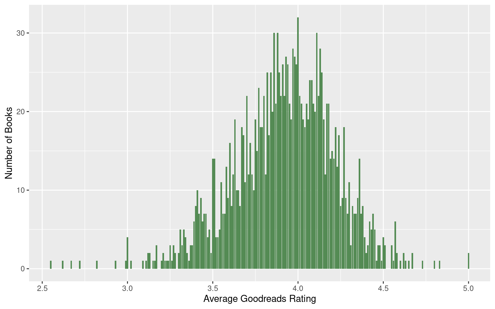

UQ Library Training Intensives
Content
R with RStudio
QGIS
Python for Data Analysis
The Project
Project Gallery
UQ Library Technology Training
Goodreads books published in 2006
Brittnee, Cleo, & David
Word cloud
Graphs
Expand
The average Goodreads ratings for books from 2006 is 3.9

Expand
Goodreads books with more pages have better review ratings (p<0.001)
Expand